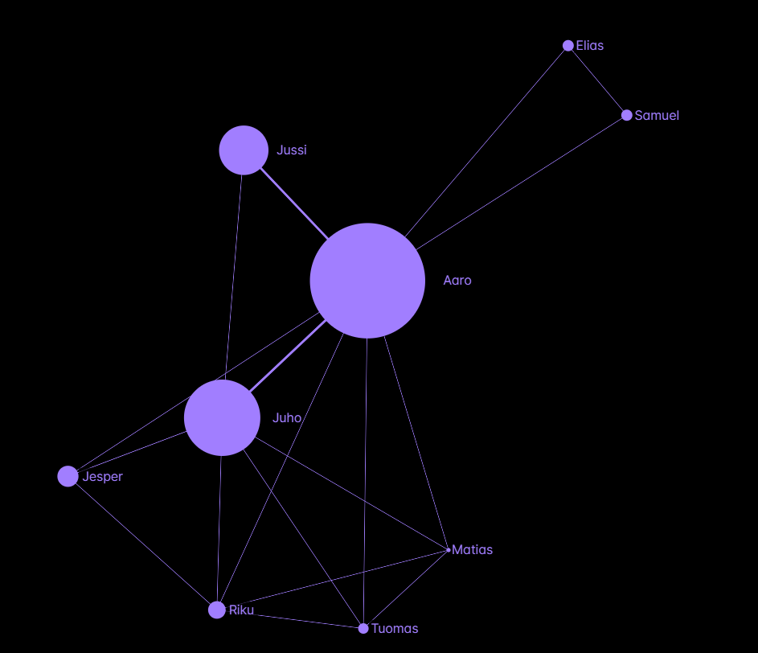

Player rating evolution by match
This graph shows every change in ratings after each match. Volatile!
Player rating evolution by tournament
This graph only shows the change in ratings after each tournament. Smooth!
Player rating evolution by day
This graph only shows the change in ratings by day.
Player node graph
This graph shows the relationships between players. Size of node corresponds to games played, thicker lines = more games played between players. No connections: players haven't played against eachother yet.